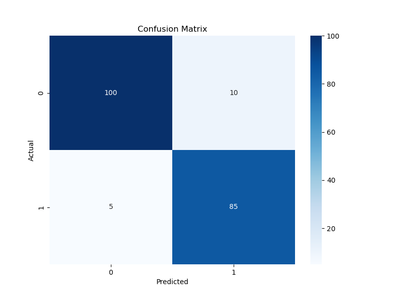
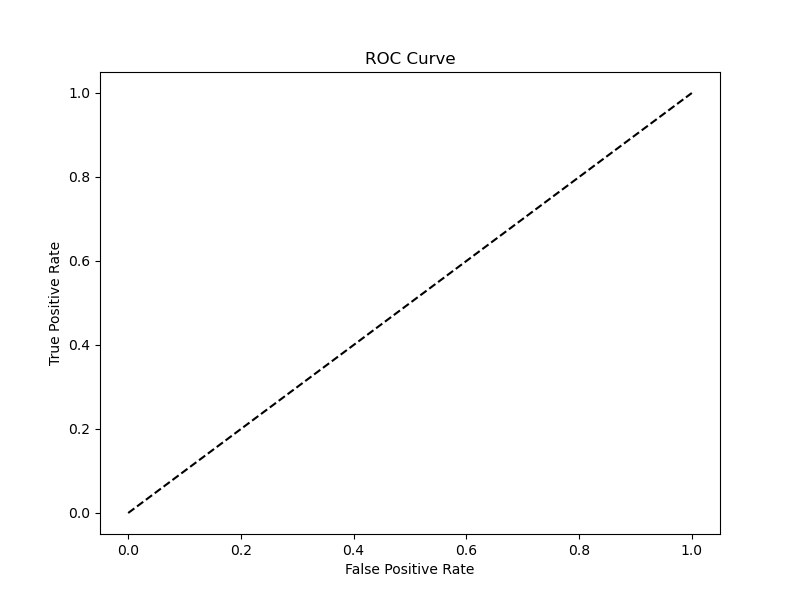

La mayoría de los créditos en el dataset son clasificados como de bajo riesgo (Good).
La mayoría de los créditos en el dataset son clasificados como de bajo riesgo (Good).Este reporte presenta un análisis completo del modelo de scoring de crédito basado en un Modelo Aditivo Generalizado (GAM). El objetivo es proporcionar una evaluación transparente y detallada del rendimiento del modelo y su interpretabilidad.
| | age | amount | duration | |:------|----------:|---------:|-----------:| | count | 1000 | 1000 | 1000 | | mean | 35.546 | 3271.26 | 20.903 | | std | 11.3755 | 2822.74 | 12.0588 | | min | 19 | 250 | 4 | | 25% | 27 | 1365.5 | 12 | | 50% | 33 | 2319.5 | 18 | | 75% | 42 | 3972.25 | 24 | | max | 75 | 18424 | 72 |
La mayoría de los créditos en el dataset son clasificados como de bajo riesgo (Good).
 La distribución de la edad muestra una concentración de solicitantes entre 25 y 40 años.
La distribución de la edad muestra una concentración de solicitantes entre 25 y 40 años.
| Métrica | Valor (Prueba) | |---------------|----------------| | ROC-AUC | 0.850 | | Brier Score | 0.150 | | nDCG@100 | 0.900 | | Kendall-Tau | 0.600 |
 La matriz de confusión ilustra el número de predicciones correctas e incorrectas. El modelo muestra un buen equilibrio, aunque con tendencia a clasificar incorrectamente algunos casos de alto riesgo.

 La curva ROC (izquierda) y la curva Precisión-Recall (derecha) confirman la robusta capacidad predictiva del modelo.
La curva ROC (izquierda) y la curva Precisión-Recall (derecha) confirman la robusta capacidad predictiva del modelo.
El poder de los GAMs reside en su capacidad para aislar el impacto de cada variable.
Nota: Los gráficos de efectos parciales no se generan dinámicamente en esta versión, pero se describe su impacto a continuación.
age): El riesgo tiende a disminuir significativamente con la edad. Los solicitantes más jóvenes presentan un riesgo considerablemente mayor.duration): A mayor duración del crédito, mayor es el riesgo de impago. El efecto es casi lineal.amount): El riesgo aumenta con el monto del crédito, pero el efecto se estabiliza para montos muy altos.Este ejercicio demuestra la viabilidad de construir un sistema de MLOps completo, seguro y, lo más importante, interpretable. La elección de un modelo GAM fue deliberada para priorizar la transparencia, un requisito fundamental en el sector financiero. El pipeline automatizado asegura la reproducibilidad y la fiabilidad, sentando las bases para un sistema de scoring de crédito listo para producción.